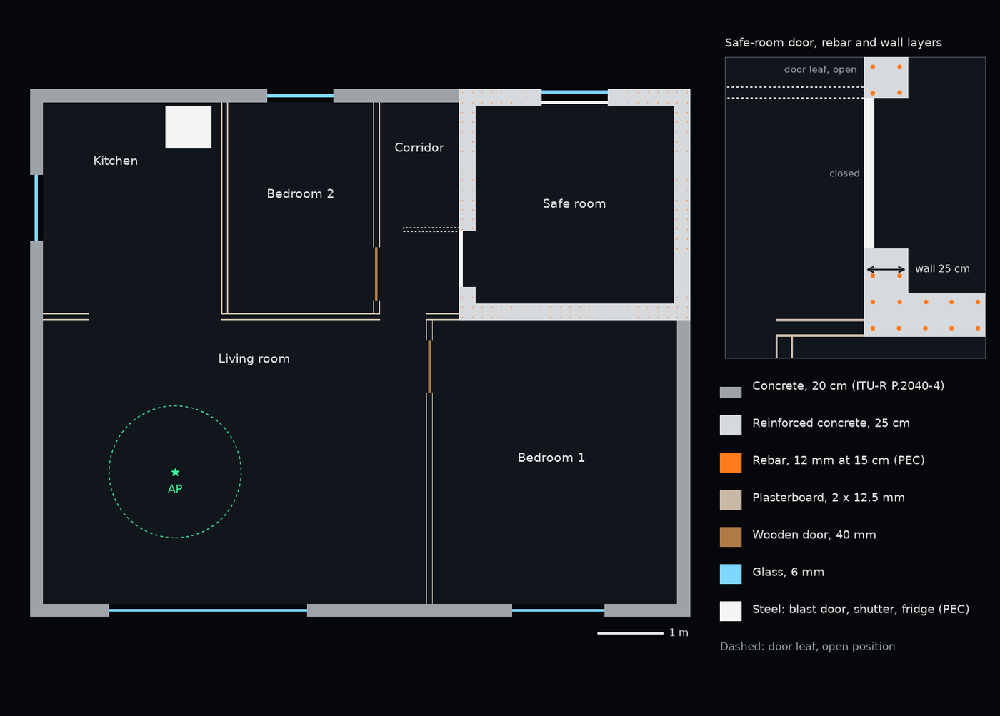
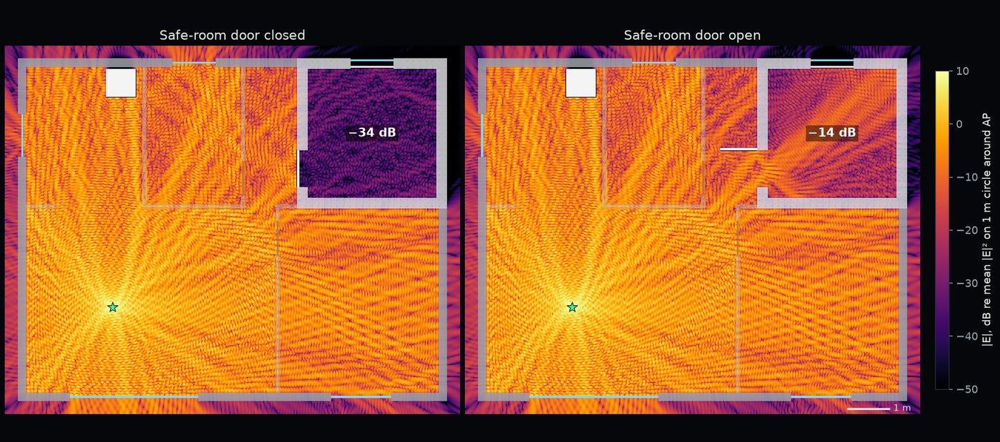

Electromagnetic simulation · Indoor propagation
Wi-Fi in a safe room: door open versus door closed
Many Israeli apartments have a safe room (mamad) built to withstand blast: 25 cm reinforced-concrete walls, a steel door and a steel window shutter. The same structure strongly attenuates the Wi-Fi signal arriving from the living room. I built a COMSOL model of an apartment with a safe room and solved the electromagnetic field at 2.44 GHz twice, with the safe-room door open and with it closed.
The model


The model is a horizontal cross-section of a 10 m × 8 m apartment. Exterior walls are 20 cm concrete with glass windows. The safe-room walls are 25 cm concrete holding 148 vertical 12 mm rebar bars in two layers at about 15 cm pitch. The blast door, the window shutter and the kitchen refrigerator are steel. Interior partitions are two plasterboard sheets with an air cavity, and interior doors are wood. The access point (AP) is in the living room.
Material properties follow Recommendation ITU-R P.2040-4, which gives frequency-dependent permittivity and conductivity for common building materials. At 2.44 GHz: concrete, relative permittivity 5.24 and conductivity 0.0928 S/m; plasterboard, 2.73 and 0.0197 S/m; wood, 1.99 and 0.0122 S/m; glass, 6.31 and 0.0119 S/m.
The problem is solved with the COMSOL RF Module in the frequency domain for the vertical component of the electric field. The source is a line current at the access point, and perfectly matched layers (PML) around the apartment absorb the outgoing wave.
The maximum element size is one eighth of a wavelength in each material: 15.4 mm in air and 6.7 mm in concrete. On each rebar surface the element size is at most 2.5 mm. The mesh has 1,813,012 triangles and 3,588,055 degrees of freedom, and each door state solves in about 80 s.

Door closed versus door open

12.3 dB
Safe-room average below the living room, door open
31.7 dB
The same difference with the door closed
19.4 dB
Rise of the safe-room average when the door is opened
2.44 GHz
Simulation frequency, in the 2.4 GHz Wi-Fi band
With the door closed, the signal reaches the safe room through the reinforced concrete, and a 25 cm concrete slab alone attenuates a normally incident wave by 18 dB. With the door open, the doorway becomes the main path: the wave enters through it and scatters off the door leaf and the rebar. In the other rooms, except the corridor, the door state changes the average level by 0.5 dB or less.
Validation and limitations
To check how the concrete and the mesh rule are handled inside a wall, I also solved a single 25 cm concrete slab under plane-wave incidence in COMSOL and compared it with the analytic transfer-matrix solution: at 2.44 GHz the transmission is 18.02 dB below the incident wave in the simulation and 18.03 dB analytically, and over 1 to 6 GHz the largest difference is 0.021 dB.

The model is a 2D horizontal cross-section: walls, doors and rebar are infinitely tall, the access point is a line source, and there are no paths through the floor or ceiling. The blast door is a seamless steel sheet with no gaps around the frame. Absolute levels and room-to-room differences are therefore estimates of the 2D model, while the shadowing, the loss through walls and door, and the transmission through openings are the physically meaningful part.